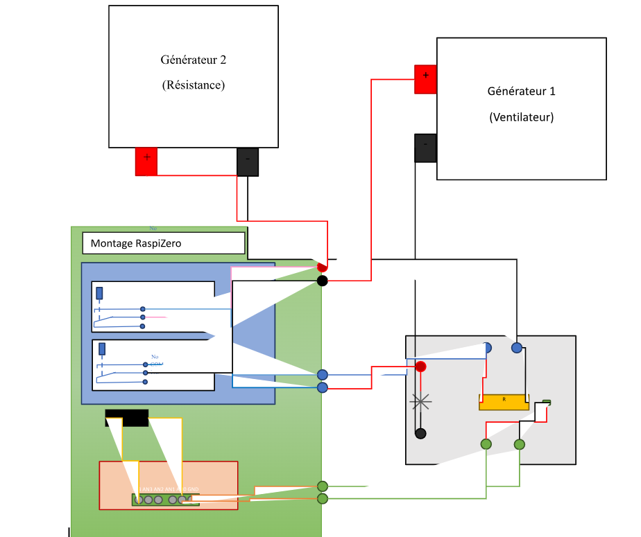

Architecture Système (RPi Zero)
Système de Régulation Thermique : Architecture matérielle et principe de fonctionnement.
Ce schéma de câblage illustre l'architecture matérielle d'un système automatisé de contrôle de la température. Le système utilise un microcontrôleur (Raspberry Pi Zero) pour lire les données d'un capteur externe et piloter deux actionneurs de puissance : un système de chauffe et un système de refroidissement.

Figure 1 : Schéma de l'architecture matérielle
1. Les Composants Principaux
Le circuit est divisé en trois grands blocs fonctionnels :
- Le cerveau du système (Montage RaspiZero - Bloc vert de gauche).
- Le module de commutation (Zone bleue) : Il intègre deux relais électromécaniques. Ces relais agissent comme des interrupteurs pilotés par le Raspberry Pi. Ils permettent d'isoler le circuit logique basse tension du Pi des circuits de puissance (ventilateur et résistance).
- Le module d'acquisition (Zone orange en bas) : Il s'agit d'une interface de conversion analogique-numérique (CAN/ADC). On y voit les broches AN0, AN1, AN2, AN3 et GND. Il sert à traduire le signal analogique du capteur en données numériques compréhensibles par le Raspberry Pi.
Les actionneurs de puissance (En haut)
- Générateur 1 (Ventilateur) : Il représente le circuit de refroidissement. Son alimentation est coupée ou établie par l'un des relais du Raspberry Pi.
- Générateur 2 (Résistance) : Il représente l'élément chauffant. Tout comme le ventilateur, son déclenchement est géré de manière isolée par le second relais.
Le circuit de mesure (Bloc gris en bas à droite)
Il contient un composant étiqueté "R" (probablement une thermistance ou une sonde de température comme une PT100). Ce circuit génère une variation de tension en fonction de la température ambiante.
2. Principe de Fonctionnement
Le flux d'information et d'énergie dans ce montage suit une boucle de régulation classique (Capteur → Traitement → Action) :
- Acquisition des données : Le circuit de mesure (bloc gris) est alimenté électriquement (fils rouge et noir/bleu). La tension aux bornes de la résistance variable "R" est envoyée via les fils verts vers les entrées analogiques (bloc orange) du Raspberry Pi.
- Traitement (non visible sur le schéma) : Le script exécuté sur le Raspberry Pi lit ces valeurs, calcule la température actuelle et la compare à une température de consigne définie par l'utilisateur.
- Action / Commutation :
- Si la température est trop basse, le Raspberry Pi envoie un signal au relais correspondant pour fermer le circuit du Générateur 2, allumant ainsi la résistance chauffante.
- Si la température est trop haute, le Pi désactive la résistance et active l'autre relais pour fermer le circuit du Générateur 1, déclenchant ainsi le ventilateur pour refroidir le système.